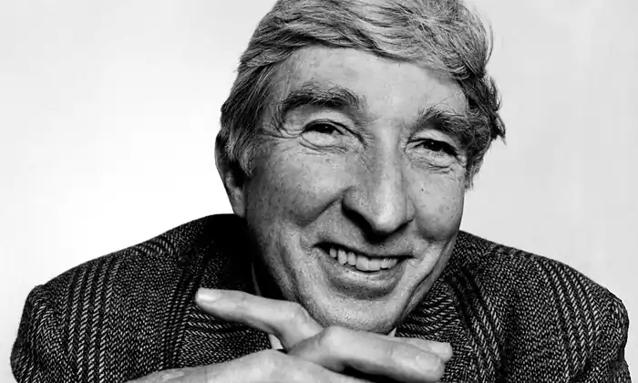
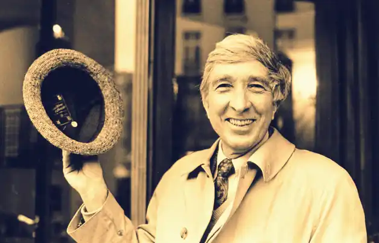
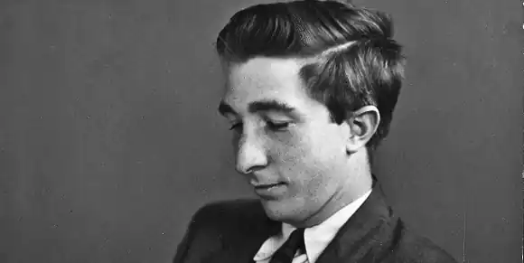

АПДАЙК, Джон (Updike, John — нар. 18.03.1932, Шиллінґтон, Пенсильванія) — американський письменник.Народився в сім'ї вчителя, нідерландського емігранта, його матір за походженням була німкою. Після закінчення школи в рідному містечку Апдайк студіював англійську літературу в Гарвардському університеті, який закінчив у 1954 році.
За рік до цього він одружився з Мері Ентвістл Пеннігтон, з якою проживе 14 років і матиме четверо дітей (другий шлюб — у 1977 р. з Мартою Раглз Бернард). У 1954 році Апдайк з успіхом склав випускні іспити на річних курсах живопису в Оксфордській школі мистецтв (Англія), проте свою давню мрію стати художником у компанії Волта Діснея так і не здійснив.
Апдайк належить до того повоєнного покоління письменників США, яке прийшло в літературу з університетськими дипломами і ґрунтовною гуманітарно-філологічною підготовкою, чим різнилося від знаменитих старших колег (Е. Хемінґвея, В. Фолкнера, Д. Стейнбека, Р. Колдуелла, Р. Райта та ін.), можливо, не настільки ерудованих, але з багатшим життєвим досвідом. Для Апдайка характерні висока літературна техніка, стильове багатство, пильна увага до психології своїх героїв; об'єкт його зображення — життя інтелігенції, добре знайомого йому "середнього класу". Дебютував нарисами, віршами, фельетонами в журналі "Нью-Йоркер" (1955—1957) і поетичною збіркою "Дерев'яна курка". Як прозаїк привернув до себе увагу романом "Ярмарок у притулку" ("The Poor house Fain", 1959), дія в якому забувається у притулку для людей похилого віку. Його мешканці бунтують проти свого директора, заклопотаного соціальними дослідженнями. Але по-справжньому Апдайк заявив про себе як оригінального майстра романом "Біжи, кролику" ("Rabbit, Run", 1960). Його герой — "пересічний американець", 26-літній Гаррі Енгстром на прізвисько Кролик, — дещо інфантильний, позбавлений внутрішнього стрижня, колись талановитий баскетболіст, а нині зайнятий малопочесною діяльністю — рекламою кухонних речей, був значним художнім відкриттям письменника, характерним соціальним типом, породженим "наляканими п'ятдесятими". Енґстром — батько сім'ї, у нього трирічний син, а дружина Дженіс знову сподівається дитини; однак герой підсвідомо незадоволений своїм побутом, тому й інколи втікає, залишаючи сім'ю; його коханка Рут теж повинна народити. Під час чергової "втечі" Кролика його новонароджена дівчинка гине, захлинувшись у ванні з вини Дженіс, яка заохотилася до спиртного. У фіналі "бунт" героя закінчується його поверненням у сімейне лоно. Історія Кролика була продовжена Апдайком у наступних романах. Таким чином, з-під його пера вийшла тетралогія. У романі "Повернення Кролика" ("Rabbit Redux", 1971) ми зустрічаємося з героєм уже через десять років; він "споважнів", очолив фірму з продажу автомобілів, засвоїв конформістські погляди. Щоправда, його сімейне життя не владналося: комівояжер Чарлі Ставрос завів роман з Дженіс, яка пориває, щоправда, не остаточно, з Кроликом. У романі прослідковується бурхлива атмосфера 60-х років, позначена злетом радикального руху і протестом проти в'єтнамської війни. Енґстром навіть здає кров двом "неконформістам" — хіппі Джіллу та негритянському екстремістові Скітеру, що приносить йому лише неприємності. У третьому томі трилогії "Кролик розбагатів"("Rabbit is Rich", 1981) дія відбувається вже в 70-х pp. Разом з Дженіс Кролик отримав частину спадку свого покійного тестя, посів міцне становище у суспільстві, перетворився в самозакоханого Беббіта, міцно вписаного в діловий "істеблішмент". Значне місце приділено стосункам героя з Рут; при цьому з'ясовується, що її дочка — не від Кролика. Виникають нелегкі проблеми і з сином Нельсоном, студентом, оскільки його дівчина сподівається від нього дитини. Роман засвідчив зростання майстерності Апдайка і був відзначений Пулітцерівською премією як найкращий роман року. У четвертому романі "Кролик на спочинку" ("Rabbit at Rest", 1990) дія відбувається вже у рейганівській Америці. Для Кролика багатство стає єдиною справжньою метою його життя. Коли під час гри у баскетбол з ним трапляється інфаркт і він помирає, головним героєм роману стає його син. Жваве зацікавлення читачів і критиків викликав і найвідоміший роман Апдайка "Кентавр" ("The Centaur", 1963), удостоєний Національної книжкової премії. Дія у ньому охоплює лише декілька днів січня 1947 p., події відбуваються у містечку Олінджер, що у штаті Пенсильванія; розповідь ведеться від імені Пітера Колдуелла, художника, який згадує свого батька Джорджа Колдуелла, вчителя біології, людину добру, вразливу, невдаху у житті. Складна, оригінальна композиція роману дає можливість робити екскурси як у минуле, так і в майбутнє. Своєрідність книги у тому, що реально-побутовий план химерно "співіснує" з міфологічним. Продовжуючи традиції Дж. Джойса, автора "Улісса", а також тенденції до "міфологізації" в сучасній літературі (Г. Гарсія Маркес, М. Фріш та ін.), Апдайк поклав у основу твору античний міф про шляхетного кентавра (напівлюдину-напівконя) Хірона, який, будучи пораненим отруєною стрілою, страждаючи від невиліковної рани, пожертвував подарованим йому безсмертям на користь Прометея. При цьому герої та ситуації міфу прозоро співвідносяться з персонажами, що діють у навмисне заземлених, реальних обставинах повоєнної Америки. Учителі, учні, мешканці Олінджера постають мовби і в буденному, і в легендарно-міфологічному вимірах. Так, сам учитель Колдуелл уподібнюється Хірону; Віра, вчителька фізкультури, його симпатія, — Афродіті; "док" Еплтон — Аполлону, директор школи Зіммерман — Зевсу; містечко Олінджер викликає асоціації з Олімпом. Така двоплановість роману, його несподівана форма спричинили жваві дискусії; висловлювалась думка, що структура роману недостатньо органічна, дещо штучна. Апдайк так пояснював свій задум: "Я хотів, щоб реалістичне відображення і міфи, взаємопроникаючи, доповнювали одне одного і дійсність створювала б якусь оболонку міфу". Очевидно, що таким прийомом Апдайк хотів підкреслити "споконвічність" морально-етичних проблем, порушених в романі, незмінність властивостей людської природи, протиборство у ній розумного і чуттєвого начал, добра та зла, "неба" та "пекла". Водночас Апдайк виявив художню гнучкість, він змінив манеру, форму розповіді. Наприклад, черговий після "Кентавра" твір — повість "Ферма" ("Оїthe Farm", 1965) — написаний у традиційній манері. Тут тонко фіксуються складні психологічні нюанси стосунків поміж героєм, його другою дружиною та матір'ю героя. Іронічне ставлення до емансипації проглядає зі сторінок роману "Іствікські відьми" ("The Witches of Eastwick", 1984), де йдеться про трьох сучасних "відьом" — розлучених жінок із провінційного містечка, які потрапляють в історію з "чортом", столичним холостяком ван Горном; в епістолярному романі "S" (1988), стилізованому під жіночі листи, заможна жінка втікає від чоловіка і вступає в релігійну секту. Натомість головний герой іншого роману "Коли розквітають лілії" ("In the Beauty of the Lilies", 1998) — пастор Кларенс Вілмот — захопившись дарвінізмом і фрейдизмом, втрачає віру в Бога і зрікається сану. Своєрідним анти-"Гамлетом" став роман Апдайка "Гертруда і Клавдій"("Gertrude and Claudius", 2000) — "передісторія шекспірівського Гамлета, в якій розповідь ведеться від третьої особи, тобто нібито від традиційного автора-деміурга, але насправді то історія жінки, майбутньої матері Гамлета і дружини Клавдія-братовбивці, написана саме з її, жіночої, точки зору" (Т. Денисова). Апдайк — художник плідний і нерівний. Інколи він віддає данину шаблонам "масової" белетристики, мусуючи мотиви сексу (роман "Місяць відпустки" — "A Month of Sundays", 1975). Значно цнотливіше розкривається інтимна тема в романі "Давай поберемося" (1976). Перу Апдайка належать також дилогії ("Беч: книга" — "Bech: A book", 1970; "Повернення Беча" — "Bech is Back", 1982; "Беч у бухті" — "Bech et Bay", 1999), герой якої — письменник, який мандрує по США і Східній Європі. У цьому збірному образі містяться сатиричні натяки на деяких літераторів, сучасників Апдайка — Н. Мейлера, Ф. Рома, С. Беллоу та ін. Апдайк плідно працює і як новеліст (зб.: "Ті самі двері" — "The Same Door", 1959; "Голубине пір'я" — "Pigeon Feathers", 1962; "Музеї та жінки" — "Museums and Women", 1972; "Проблеми" — "Problems", 1979; "У пошуках свого обличчя" — "Seek My Face", 2002 та ін.); його віршам притаманне жартівливо-іронічне звучання. Йому належать також численні есе, рецензії, літературно-критичні статті. Вже за життя Апдайк сприймається як постать класична, а його твори стають предметом уваги не лише журнальних рецензентів, а й університетської "академічної" критики. У своїх найкращих книгах Апдайк виступає як своєрідний побутописець звичаїв і психології середнього класу, "споживацького суспільства", чудовий стиліст, котрий володіє всіма фарбами мовної палітри, де можна натрапити і на легку іронію, і на гумор, а інколи — на сатиричне згущення фарб. Українською мовою окремі твори Апдайка переклали О. Сенюк, Ю. Райський, Ф. Соломатін, Ю. Попсуєнко. Тв.: Укр. пер. — Кизилове дерево // Всесвіт. — 1969. — № 12; Голубине пір'я//Амер. новела. — К., 1978; Кентавр. Ферма. — К., 1988; Рос. пер. — Кролик, беги. Давай поженимся. — Москва, 1979; Кентавр. Ферма. — Москва, 1984; Иствикские ведьмы. — Москва, 1998; Гертруда и Клавдий. — Москва, 2001; Кролик, беги. Кентавр. Ферма. Ярмарка в богадельне. — С.-Петербург, 2003. Літ.: Денисова Т.Н. Проза Джона Апдайка // Всесвіт. — 1967. — № 7; Денисова Т.Н. Плутані стежки Джона Апдайка // Всесвіт. — 1973. — № 10; Денисова Т. Роман і романісти США XX ст. — К., 1990; Денисова Т.Н. Історія амер. літ. XX століття. — К., 2002; Мендельсон М.О. Роман США сегодня. — Москва, 1977; Морозова Т.Л. Образ молодого человека в лит. США. — Москва, 1969; Мулярчик А.С. Спор идет о человеке; О лит. США второй половины XX в. — Москва, 1986. Б. Пленсон